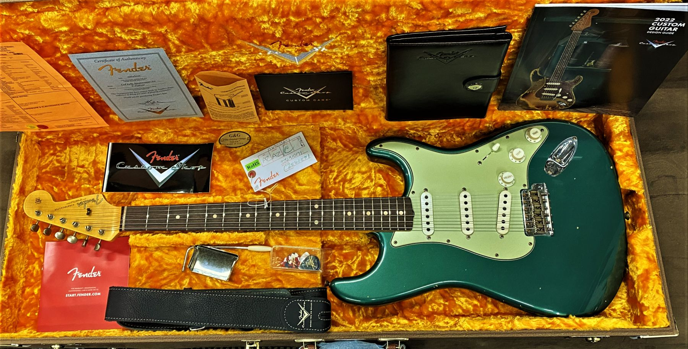

In Buddy Holly’s case, he traded in a Gibson Les Paul to get his hands on one. Legend has it that the Strat’s lighter weight, futuristic (at the time) design and playability were why he made the switch. These are the very same reasons why many guitarists prefer a Stratocaster to this day. The Stratocaster (often called a ‘Strat’) has a long and fascinating history, and it remains among the most popular electric guitar models on the market. Today we’re going to take a quick look at the history of the Stratocaster. We’ll also touch on its evolution through its many changes since being introduced in the early 1950s. So put a Strat on, plug in, crank your amp up, and let’s go!
In the early 1950s, Fender was a small but growing guitar company looking to make its mark in the post-war era. Led by Leo Fender, his company had previous success with the Telecaster and the Precision Bass. To be sure, both continue to be legendary instruments in their own right. As early as 1951, Leo and his team started developing the successor to the Telecaster. Fender’s goal was simply to build what he felt was the best guitar possible, both from a functional standpoint and also from a manufacturer’s point of view. The first Fender Stratocaster was unveiled to the world in early 1954. It was among the first production guitars to offer – what are now considered – ‘standard’ features on an electric guitar. One of those is the three precisely voiced pickups, controlled by a three-way selector switch. Another innovation was a revolutionary tremolo bridge system that offered exceptional performance with good tuning stability. Market reaction to Fender’s new elite guitar was somewhat slow at first. Still, by the end of the decade, the Stratocaster was featured by several prominent guitarists. These optics locked in the Strat’s place in the market and showed extreme promise for the future
Thanks to the Stratocaster’s success in no small part, Leo Fender sold his company to CBS in 1965 for $13 million. The change in ownership led to various production design changes. Some were well received, while others were not. Some of the less popular modifications were simply due to lower manufacturing costs, but they often came across as substandard to legions of Fender customers. Many loyal Fender customers view this era as the low point for both the Stratocaster and the company.
The guitar introduced into the popular market several features that were innovative for electric guitars in the mid-1950s. The distinctive body shape, which has become commonplace among electric guitars, was revolutionary for the time period, and for the first time a mass-market electric guitar did not significantly resemble earlier acoustic models. The double cutaway, elongated horns, and heavily contoured back were all designed for better balance and comfort to play while standing up and slung off the shoulder with a strap. The three-pickup design offered players increased versatility and choice in tone quality over earlier one- and two-pickup electric guitars, and a responsive and simplified vibrato arm integrated into the bridge plate, which marked a significant design improvement over other vibrato systems, such as those manufactured by Bigsby. All of these design elements were popularized and later became an industry standard due to the success of the Stratocaster. The Fender Stratocaster is one of the most iconic electric guitar models of all time.[3]